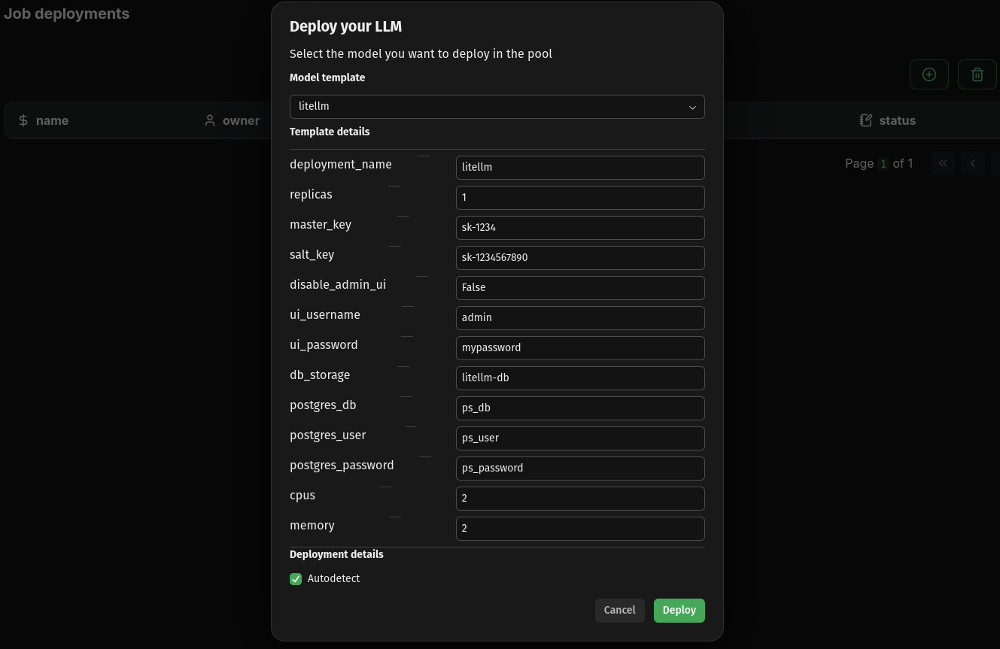

⭐⭐⭐ Kalavai and our LLM pools are open source and free to use in both commercial and non-commercial purposes. If you find it useful, consider supporting us by giving a star to our GitHub project, joining our discord channel and follow our Substack.
This guide will show you how to start a self-hosted LLM pool with your own hardware, configure it with a single API and UI Playground for all your models and deploy and access a Qwen3 4B instance.
What you'll achieve
- Configure unified LLM interface
- Deploy a llamacpp model
- Access model via code and UI
1. Pre-requisites
- Install kalavai CLI on each machine
- Set up a 2 machine LLM pool, i.e. a seed node and one worker
Note: the following commands can be executed on any machine that is part of the pool, provided you have used admin or user access modes to generate the token. If you have used worker, deployments are only allowed in the seed node.
Unified OpenAI-like API
Model templates deployed in LLM pools have an optional key parameter to register themselves with a LiteLLM instance. LiteLLM is a powerful API that unifies all of your models into a single API, making developing apps with LLMs easier and more flexible.
Our LiteLLM template automates the deployment of the API across a pool, database included. To deploy it using the Kalavai GUI, navigate to Jobs, then click on the circle-plus button, in which you can select a litellm template.

Once the deployment is complete, you can check the LiteLLM endpoint by navigating to Jobs and seeing the corresponding endpoint for the litellm job.

You will need a virtual key to register models with LiteLLM. For testing you can use the master key defined in your values.yaml under master_key, but it is recommended to generate a virtual one that does not have privilege access. The easiest way of doing so is via the admin UI, under http://192.168.68.67:30535/ui (see more details here).
Example virtual key: sk-rDCm0Vd5hDOigaNbQSSsEQ

Unified UI Playground
OpenWebUI is a great ChatGPT-like app that helps testing LLMs. Our WebUI template manages the deployment of an OpenWebUI instance in your LLM pool, and links it to your LiteLLM instance, so any models deployed and registered with LiteLLM automatically appear in the playground.
To deploy, navigate back to Jobs and click the circle-plus button, this time selecting the playground template. Set the litellm_key to match your virtual key.
Once it's ready, you can access the UI via its advertised endpoint (under Jobs), directly on your browser. The first time you login you'll be able to create an admin user. Check the official documentation for more details on the app.

Check deployment progress
Jobs may take a while to deploy. Check the progress in the Jobs page, or using the CLI:
$ kalavai job list
┏━━━━━━━━━┳━━━━━━━━━━━━┳━━━━━━━━━━━━┳━━━━━━━━━━━━━━━━━━━━━━━━━━━━━━━━━━━━━━━━━━━━━┓
┃ Owner ┃ Deployment ┃ Workers ┃ Endpoint ┃
┡━━━━━━━━━╇━━━━━━━━━━━━╇━━━━━━━━━━━━╇━━━━━━━━━━━━━━━━━━━━━━━━━━━━━━━━━━━━━━━━━━━━━┩
│ default │ litellm │ Ready: 2 │ http://192.168.68.67:30535 (mapped to 4000) │
├─────────┼────────────┼────────────┼─────────────────────────────────────────────┤
│ default │ webui-1 │ Pending: 1 │ http://192.168.68.67:31141 (mapped to 8080) │
└─────────┴────────────┴────────────┴─────────────────────────────────────────────┘
In this case, litellm has been deployed but webui-1 is still pending schedule. If a job cannot be scheduled due to lack of resources, consider adding more nodes or reducing the requested resources via the values.yaml files.
3. Deploy models with compatible frameworks
In this section, we'll look into how to deploy a model with another of our supported model engines: llama.cpp. You can use the kalavai CLI to deploy jobs (via kalavai job deploy) but here we'll use the much simpler GUI route.
Just like we did for LiteLLM and Playground, you can deploy a model by navigating to the Jobs page and clicking the circle-plus button. Select llamacpp as model template, and populate the following values:
working_memory: 10 (enough free space GBs to fit the model weights)workers: 2 (this will distribute the model onto our 2 machines)repo_id: Qwen/Qwen3-4B-GGUF (the repo id from Huggingface)model_filename: Qwen3-4B-Q4_K_M.gguf (the filename of the quantized version we want)hf_token:if using a gated model (in this case it's not needed) litellm_key: sk-qoQC5lijoaBwXoyi_YP1xA (Advanced parameter; the virtual key generated above for LiteLLM. This is key to make sure models are self registering to both LiteLLM and the playground.)

4. Access your models
Once they are donwloaded and loaded into memory, your models will be readily available both via the LiteLLM API as well as through the UI Playground.
UI Playground
The pool comes with an OpenWebUI deployment (playground job) to make it easy to test model inference with LLMs via the browser. Within the UI you can select the model you wish to test and have a chat.
Note: the playground is a shared instance to help users test models without code and should not be used in production. You need to create a playground account to access it. This can be different to your Kalavai account details. The creation of a new user is necessary to keep things like user chat history and preferences.
Single API endpoint
All interactions to models in the pool are brokered by a LiteLLM endpoint that is installed in the system. To interact with it you need the following:
- The
LITELLM_URLis the endpoint displayed in theJobspage for thelitellmjob. - The
LITELLM_KEYis the one you have generated above. - The
MODEL_NAMEyou want to use (the job name displayed in theJobspage)
In this example:
LITELLM_URL=http://192.168.68.67:30535LITELLM_KEY=sk-qoQC5lijoaBwXoyi_YP1xAMODEL_NAME=qwen3_qwen3_4b_gguf_qwen3_4b_q4_k_m_gguf
Check available LLMs
Using cURL:
curl -X GET "<LITELLM_URL>/v1/models" \
-H 'Authorization: Bearer <LITELLM_KEY>' \
-H "accept: application/json" \
-H "Content-Type: application/json"
Using python:
import requests
LITELLM_URL = "http://192.168.68.67:30535"
LITELLM_KEY = "sk-qoQC5lijoaBwXoyi_YP1xA"
def list_models():
response = requests.get(
f"{LITELLM_URL}/v1/models",
headers={"Authorization": f"Bearer {LITELLM_KEY}"}
)
return response.json()
if __name__ == "__main__":
print(
list_models()
)
Use models
Using cURL:
curl --location '<LITELLM_URL>/chat/completions' \
--header 'Authorization: Bearer <LITELLM_KEY>' \
--header 'Content-Type: application/json' \
--data '{
"model": "<MODEL_NAME>",
"messages": [
{
"role": "user",
"content": "what llm are you"
}
]
}'
Using python:
import requests
LITELLM_URL = "http://192.168.68.67:30535"
LITELLM_KEY = "sk-qoQC5lijoaBwXoyi_YP1xA"
def model_inference():
response = requests.post(
f"{LITELLM_URL}/chat/completions",
headers={"Authorization": f"Bearer {LITELLM_KEY}"},
json={
"model": "<MODEL_NAME>",
"messages": [
{
"role": "user",
"content": "what llm are you"
}]
}
)
return response.json()
if __name__ == "__main__":
print(
model_inference()
)
For more details on the endpoint(s) parameters, check out LiteLLM documentation and the Swagger API
5. Clean up
To remove any model deployment, navigate to the Jobs page, select the job (checkbox next to its name) and click the bin icon on top of the table. This will remove the deployment from any worker involved and free its resources.
6. What's next?
Enjoy your new supercomputer, check out our templates and examples for more model engines and keep us posted on what you achieve!